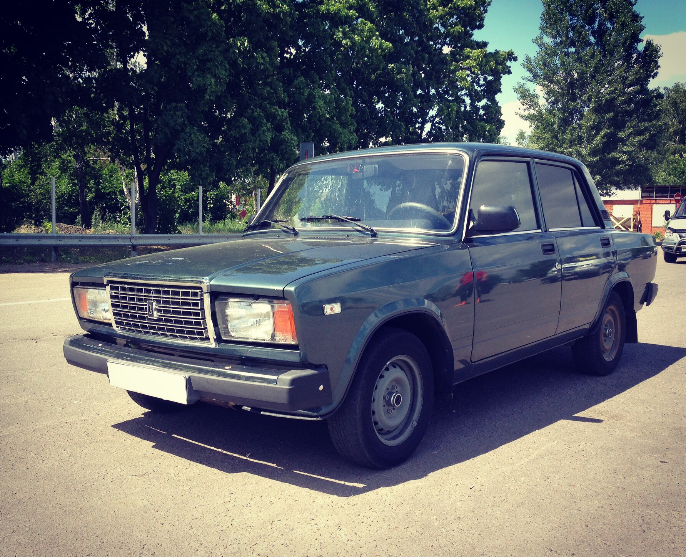
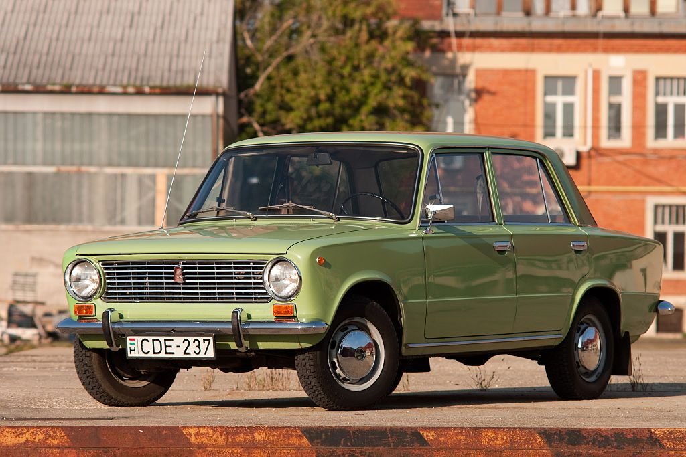

Wybierz swój ulubiony samochód z bloku wschodniego
Związek Radziecki (ZSRR)
LADA (Лада)
 LADA 2107
LADA Niva (2121)
LADA Samara (2109)
GAZ (ГАЗ, Горьковский автомобильный завод)
GAZ-M20 Pobieda
GAZ-21 Wołga
GAZ-14 Czajka
UAZ (УАЗ, Ульяновский автомобильный завод)
UAZ-469
UAZ-452 "Buchanka"
UAZ-3160
Niemiecka Republika Demokratyczna (DDR)
Trabant - VEB Sachsenring Automobilwerke Zwickau
Trabant P50
Trabant P60
Trabant 601
Wartburg - VEB Automobilwerk Eisenach
Wartburg 311
Wartburg 353
Wartburg 1.3
Polska Rzeczpospolita Ludowa (PRL)
FSO (Fabryka Samochodów Osobowych)
Polski Fiat 125p ("Duży Fiat")
FSO Polonez
FSO Warszawa (M20/223)
FSM (Fabryka Samochodów Małolitrażowych)
Polski Fiat 126p ("Maluch")
FSM Syrena 105
Czechosłowacja (ČSSR)
Škoda (AZNP)
Škoda 1000 MB
Škoda 120 (Seria 742)
Škoda Favorit
Tatra (Tatra Kopřivnice)
Tatra 603
Rumunia
Dacia (Uzina de Autoturisme Pitești)
Dacia 1300
Dacia 1310 (zmodernizowana)
ARO (Auto România)
ARO 24
ARO M461
Jugosławia (SFRJ)
Zastava (Zavodi Crvena Zastava)
Zastava 750 ("Fico")
Zastava 101 / Skala
Zastava Yugo (Koral)
Galeria samochodów

Lada 2101